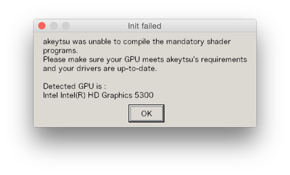

akeytsuをMacBookで使いたい
概要
これ。
まだまだ過渡期っぽいんだけど、モーションつけるためだけにBlender使いたくないな、、？っていう思いに駆られたので、いろいろ試してみてる。
結論から言うとGPU的に無理だった。
サポートのページに書いてある内容が微妙だったんで試してみた。
https://nukeygara.atlassian.net/wiki/display/AUG/System+Requirements
方法1.VMWareのお世話になる
GPUが検出できなくて詰んだ。
なんか手を打つことができそうな気はする。
方法2.WineとかNihonsyuとか
http://matome.naver.jp/odai/2140238022377155001
結果

現時点での結論
Windowsマシンで使おう。